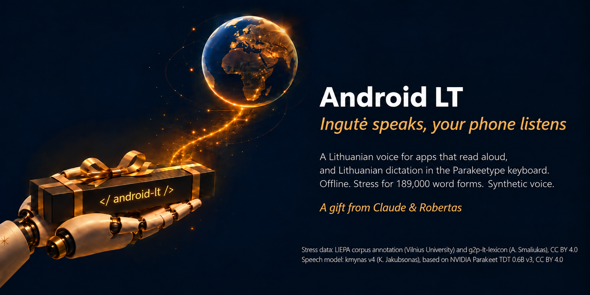
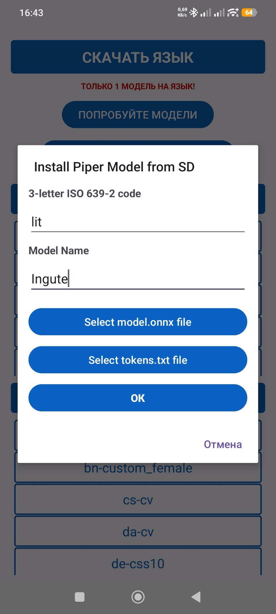
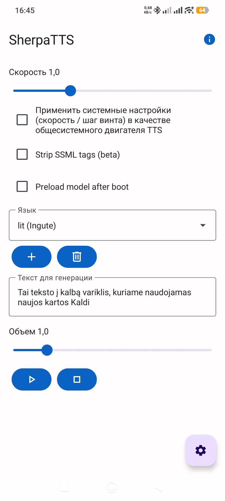

A Lithuanian voice for Android phones: Ingutė, offline.
Your phone reads Lithuanian aloud, with clear s sounds and the stress set for 189,000 word forms.
Made with AI: Claude (Anthropic) prepared and measured the package together with Robertas; the banner was made with AI. Ingutė is a synthetic voice.
Ingutė becomes the phone's text-to-speech voice, used by apps that read aloud: article and book readers, the screen reader.
The voice runs on the phone. The internet is needed once, to download the app and the voice.
Both the voice and the SherpaTTS app are free and open source, with no ads and no accounts.
The phone's pronunciation engine, eSpeak NG, often writes Lithuanian /s/ with a symbol Ingutė hardly learned. Without the fix "pasiimk skėtį" comes out as "paimk kėtį". The fix is in tokens.txt.
On its own, eSpeak NG puts the stress where the dictionary does in only 53 % of multi-syllable words: dãbar, lãbai, Lietùvos. With our lt_dict it is 99.3 %: dabar̃, labaĩ, Lietuvõs.
A Lithuanian speech recognition model listened to 12 everyday sentences. Word errors: 7.7 % without fixes, 4.4 % with the s fix, 1.1 % with the stress list as well. Tested on a Xiaomi 12T Pro, Android 15, SherpaTTS 3.4.
lt_LT-ingute-medium.onnx and tokens.txt.lit, name Ingute, then the model and tokens files → OK.

Ingutė now speaks with the s fix. The stress list takes one more step, from a computer.
Recent Android versions do not let file managers write into another app's folder, so lt_dict goes in with Google's adb. On the phone: Settings → About phone → tap the build number 7 times → in developer options turn on USB debugging → connect the cable and allow it.
First check that your SherpaTTS dictionary is the original (it must be 5426503daf0a29836d0f168d38b38581; if not, do not replace it):
adb shell md5sum /sdcard/Android/data/org.woheller69.ttsengine/files/espeak-ng-data/lt_dictThen a backup, the new dictionary and a restart of the app:
adb shell cp /sdcard/Android/data/org.woheller69.ttsengine/files/espeak-ng-data/lt_dict /sdcard/Android/data/org.woheller69.ttsengine/files/espeak-ng-data/lt_dict_orig
adb push lt_dict /sdcard/Android/data/org.woheller69.ttsengine/files/espeak-ng-data/lt_dict
adb shell am force-stop org.woheller69.ttsengineListen to "Dabar labai gera diena, nes Lietuvos rinktinė laimėjo." To undo, rename lt_dict_orig back to lt_dict. Reinstalling SherpaTTS undoes this step.
Text and audio stay on the phone: the voice runs there. This package is only files, with no program that connects anywhere. SherpaTTS goes online only when you ask it to download a language from its own list.
lt_dict was built for SherpaTTS 3.4; check the md5 first on other versions.lt_dict and its sources: GPL-3.0 (eSpeak NG data). The stress positions come from two CC BY 4.0 works: the LIEPA corpus annotation (Vilnius University) and Arūnas Smaliukas's g2p-lt-lexicon (THIRD_PARTY.md).SherpaTTS (woheller69), sherpa-onnx (k2-fsa), eSpeak NG, Piper and Michael Hansen; the creators of the LIEPA corpus (Vilnius University) and Arūnas Smaliukas.
Stuck? Paste into any AI chat: Read https://raw.githubusercontent.com/RobertasTa/android-lt/main/AI_CONSULTANT_BRIEF.md and help me with Android LT. Questions: Issues.